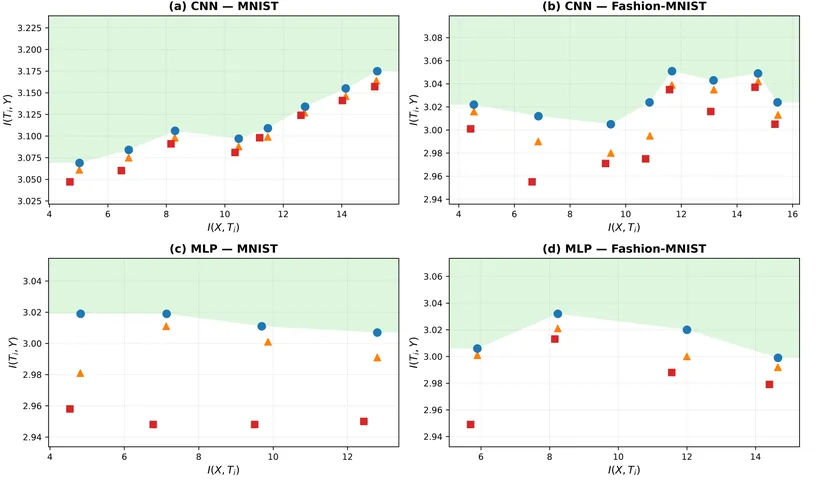

2026
Improving Accuracy and Efficiency in DNNs with Approximate Multipliers: Insights from Information Bottleneck Theory
MDPI AI, 2026, 7, 385
Read paper
Summary
This paper introduces a layer-wise heterogeneous approach that assigns different INT8 approximate multipliers across DNN layers using a genetic algorithm. Evaluated on CNNs, MLPs, VGG11, and VGG13, the selected configurations improve Top-1 accuracy by up to 2.07 percentage points over the corresponding exact INT8 baseline while providing estimated multiplier-energy savings of up to 44.75%. Information-plane analysis indicates that the heterogeneous configurations can improve representation compression while retaining more task-relevant information, offering a post-training route to more accurate and energy-efficient neural networks.

